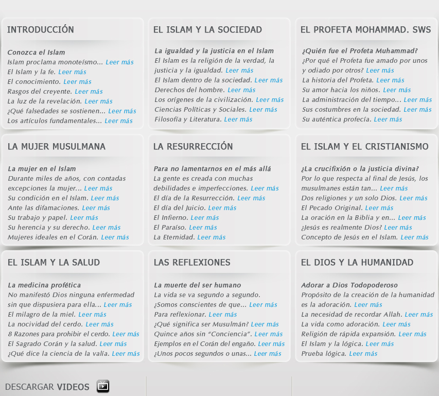
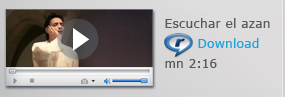
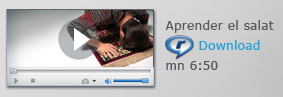
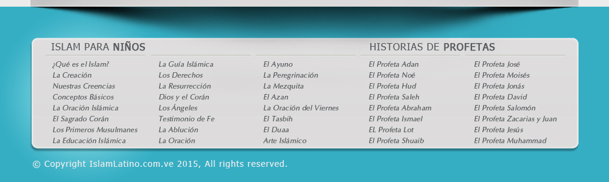

MENU PRINCIPAL
ALLAH
SUS 99 NOMBRES
ISLAM
INTRODUCCION
ISLAM
SUS ORIGENES
SU CENTRO
SUS RITOS
SU FUNDAMENTO
SU ESPADA
SU CIVILIZACION
SU DESARROLLO
SU EDAD DE ORO
SUS CIENCIAS
SU FILOSOFIA
SU LITERATURA
FIQH
AQUIDA
TAWHID
LEYES
DERECHOS
DERECHOS
MATRIMONIO
FAMILIA
DIVORCIO
HISTORIA
HEGIRA
CALIFATO
ABLUCION
USURA
POLITEISMO
LAPIDACION
CREACION
DIVINIDAD
ADORACION
CONVERSION
JUSTICIA
MENU INICIAL
UNIVERSALIDAD
LUGARES SANTOS
LIBROS DIVINOS
SOCIEDAD
MODALES
SISTEMA MORAL
GENEROSIDAD
HONESTIDAD
HUMILDAD
CONFIABILIDAD
RESPETO
ALTRUISMO
CALIGRAFIA
CALENDARIO
ARQUITECTURA
SIMBOLOGIA
FESTIVIDADES
NOMBRES
FEMENINOS
LETRA A
LETRA B - H
LETRA I - M
LETRA N - Z
MASCULINOS
LETRA A
LETRA B - K
LETRA L - S
LETRA T - Z
DIA VIERNES
OPINION ERRONEA
8 RESPUESTAS
RELIGION
LOS PROFETAS
LOS ANGELES
LOS APOSTOLES
LOS GENIOS
LOS DIABLOS
LOS MILAGROS
NOBLE CORAN
SU HISTORIS
SURAS
DE 01 A 38
DE 39 A 76
DE 77 A 114
DESCARGAR PDF
CORAN ESPAÑOL
CORAN ARABE
SU TEXTO
SUS VALORES
SU PRESERVACION
SU ASTRONOMIA
SU BIOLOGIA
SU ECOLOGIA
SU GEOLOGIA
SU OCEANOGRAFIA
SU UNIVERSO
SU ENTOMOLOGIA
SUPLICAS
MILAGRO DE KAABA
CORAN Y BIBLIA
HADICES
LOS HADICES
SU CIENCIA
SUNNAH
SUPLICAS
NARRADORES
40 HADICES
100 HADICES
110 QUDSI
AZAN
ABLUCION
ORACION
RAMADAN
AYUNO
RECITACION
MUJER
MATRIMONIO
PACIENCIA
ALCOHOL
MUERTE
CRISTIANOS
CATEGORIAS
CONDICION
HUMANA
CONFIANZA
GRATITUD
MENTIRA
MORALIDAD
PACIENCIA
PUDOR
SINCERIDAD
LA MUJER
ACTITUD
EN DAWAH
OCCIDENTAL
SU CONDICION
SU CONDUCTA
SU DERECHO
SU ECONOMIA
SU PROTECCION
SU VESTIMENTA
SU VOZ
VIOLENCIA
MATRIMONIO
ANTES DE LA ERA
CARACTERISTICAS
CASAMIENTO
CONTRATO
DERECHOS
DIGNIDAD
DOTE
LEGISLACION
OBLIGACIONES
DIVORCIO
COMO EFECTUA
DIVORCIO
EL PORQUE
OTRAS LEYES
REQUISITOS
SU DERECHO
SU SISTEMA
SUS LEYES
RELIGIONES
JUDAISMO
CRISTIANISMO
BIBLIA
MARIA
JESUS
¿ES JESUS DIOS?
¿ES HIJO DE DIOS?
SU HISTORIA
SU MENSAJE
SU VERDAD
¿CRUCIFICADO?
TRINIDAD
SU RETORNO
GOG Y MAGOG
HISTORIA
EN RESUMEN
SISTEMA
MEDIO AMBIENTE
CASTIGOS
DERECHOS
ECONOMIA
FAMILIA
JUSTICIA
POLIGAMIA
POLITICA
SACRIFICIO HALAL
SALUD
PILARES
CICO PILARES
TESTIMONIO DE FE
ORACION
ZAKAT
AYUNO
HAJJ
AYUNO
RAMADAN
AYUNO
SUS TIPOS
SU EPOCA
SU REVELACION
CONCEPTOS
EL UNIVERSO
LA COMUNIDAD
LA FE
LA FRATERNIDAD
LA IGUALDAD
LA LIBERTAD
LA MORALIDAD
LA PAZ
LA PIEDAD
LA RECTITUD
LA RELIGION
LA VIDA
EL PECADO
MOHAMMAD
¿QUIEN ERA?
EL LA BIBLIA
SU BIOGRAFIA
SU PROFECIA
SUS MILAGROS
SUS ORACIONES
SUS CUALIDADES
SUS DICHOS
SUS PERLAS
SU TOLERANCIA
ULTIMO MENSAJE
INTERROGANTES
EL CREADOR
LA REVELACION
LA VIDA
CONCEPTOS
EVIDENCIA
CREENCIA
LA VERDAD UNICA
REVELACION
EMBRIOLOGICOS
SER MUSULMAN
CONVERTIRSE
¿COMO SERLO?
ADORACION
CIRCUNSICION
EL VELO
LA MUERTE
SALVACION
ETERNIDAD



